速览
只要是游戏，数据读取就无论如何都会发生。和「Loading」字样一起只是被晾着等待的时间，不太受欢迎吧。有时会用游戏演出来弥补读取时间：初代《生化危机》在房间往来时会有开门演出，这是因为内部在读取——凭它的长度还能预测有僵尸的房间，这且不论——这是游戏中必要的读取时间与必然的演出相契合的好例子。在那里放读取标志会有点扫兴吧；而且做得这么好，也许没有读取显示更好。但这终究是几十年前的事。现在讲求速度感：硬件读取速度也飞快，单纯的等待时间几乎不受欢迎。至少显示出正在读取，就更容易接受；有的作品织入巧妙的演出，但如果做不到那种程度，老实地告知正在读取比较好。再说说开发上的情况：开发时和完成时，由于优化推进，读取时间往往不同，完成时更短。既然如此，别依赖演出比较好；读取显示也可以用简洁的标志、不土气地显示，所以最好做到哪里都能显示。现在出「Now Loading」文字的作品几乎看不到了；既然如此，就让它为营造游戏世界的氛围出一份力吧。
1. 读取不可避免 0:03
只要是游戏，数据读取就无论如何都会发生。和「Loading」字样一起只是被晾着等待的时间，不太受欢迎吧。
2. 《生化危机》的开门 0:21
有时会用游戏演出来弥补读取时间：初代《生化危机》在房间往来时会有开门演出，这是因为内部在读取。
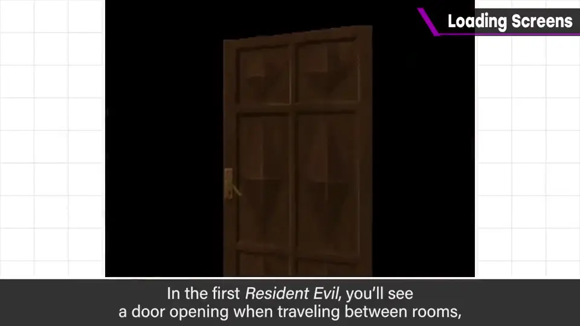
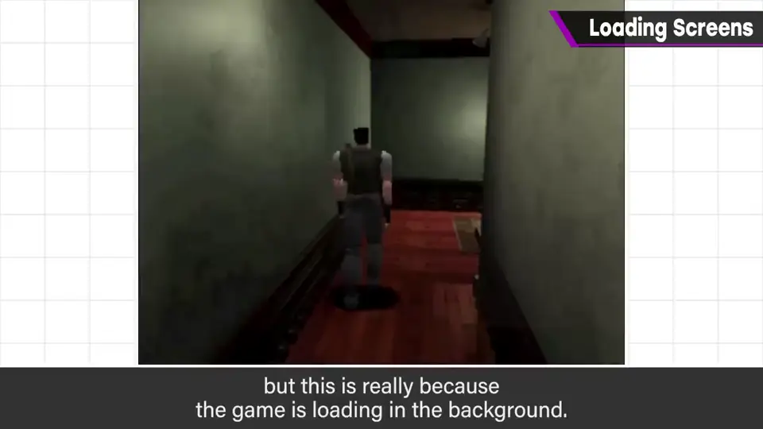
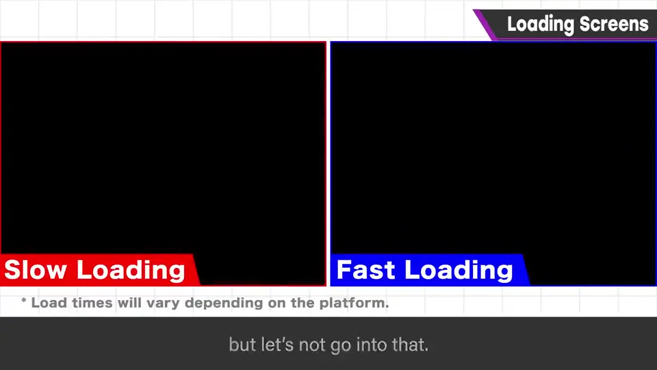
凭它的长度还能预测有僵尸的房间——这且不论。
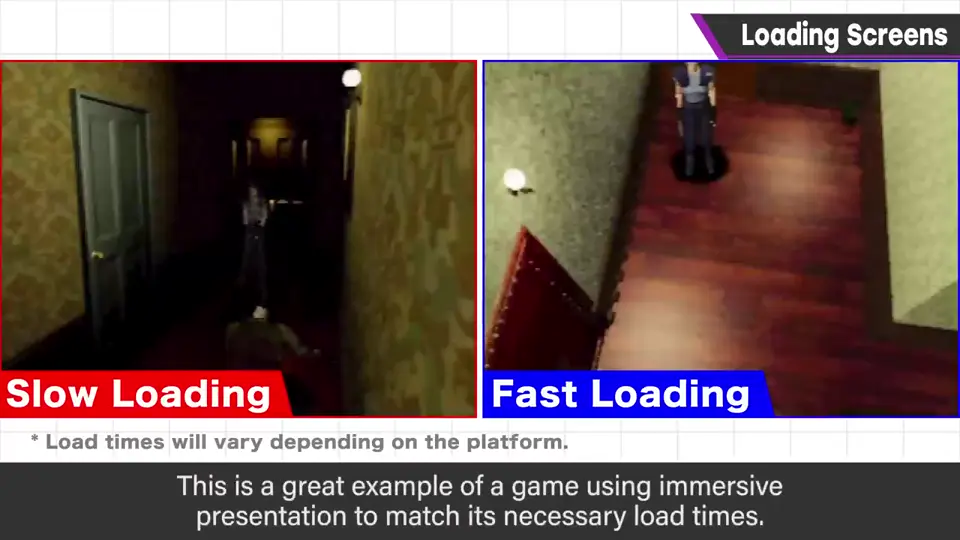
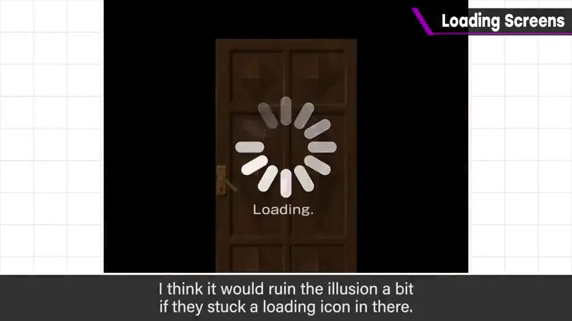
在那里放读取标志会有点扫兴吧；做得这么好，也许没有读取显示更好。
3. 如今讲求速度 0:56
但这终究是几十年前的事。现在讲求速度感：硬件读取速度也飞快，单纯的等待时间几乎不受欢迎。
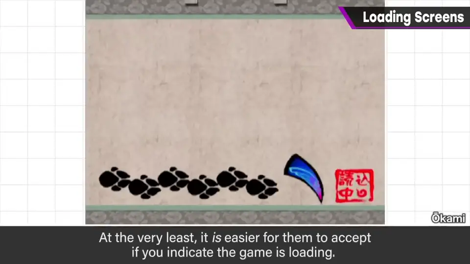
有的作品织入巧妙的演出，但如果做不到那种程度，老实地告知正在读取比较好。
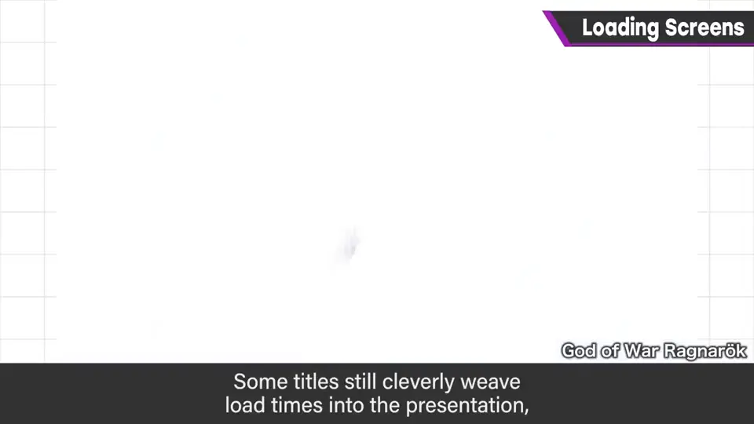
4. 开发时与完成时 1:35
开发时和完成时，由于优化推进，读取时间往往不同，完成时更短。
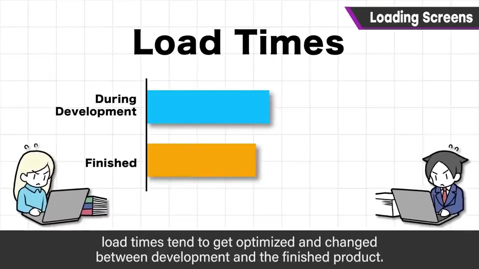
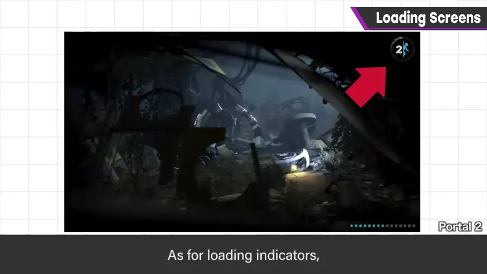
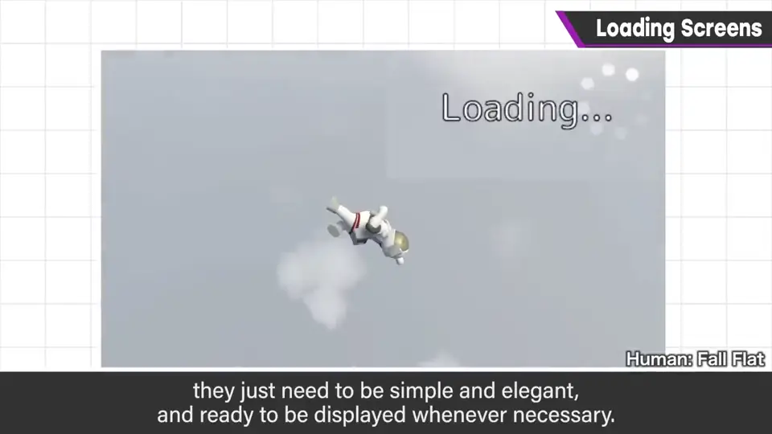
5. 为氛围出力 2:05
现在出「Now Loading」文字的作品几乎看不到了。
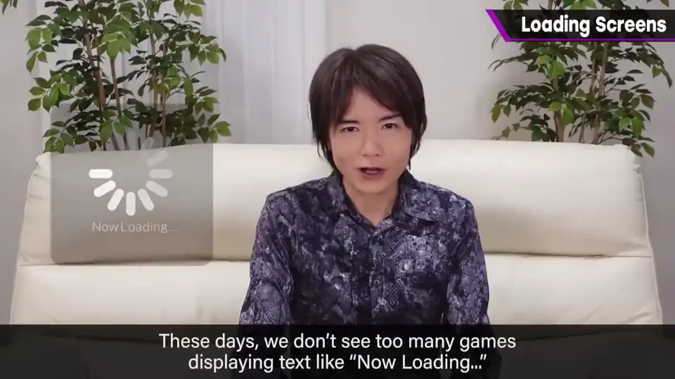
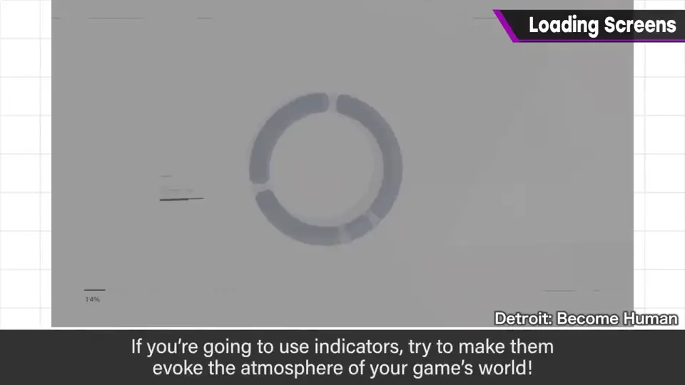
自测题
1. 初代《生化危机》的开门演出为什么是好例子？
必要的读取时间与必然的演出完美契合。 0:45
2. 为什么现在应该显示读取标志？
讲求速度，单纯等待不受欢迎；显示在读取更容易让人接受。 1:18
3. 为什么不要依赖演出来掩盖读取？
开发中与完成时读取时间不同（优化后更短）。 1:45